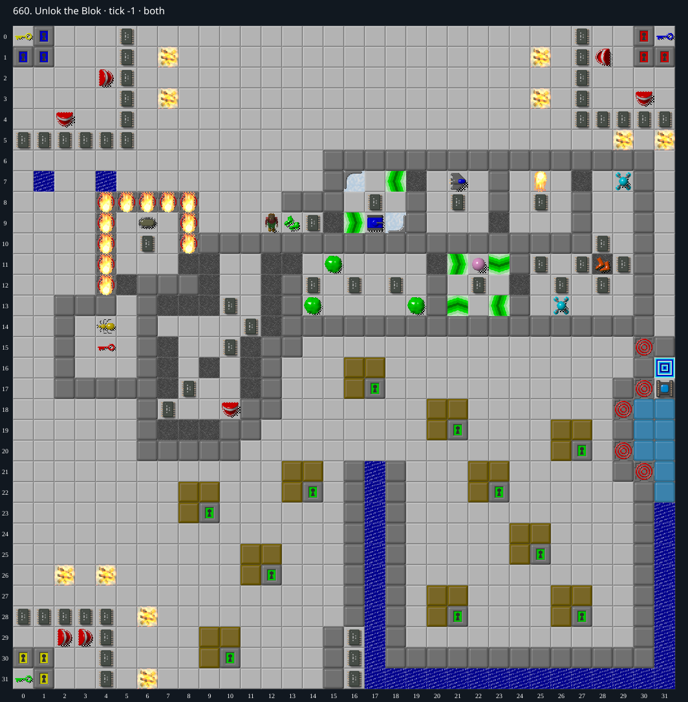

Jacques · Original Tile World MS
660. Unlok the Blok
Impossibility argumentMandatory chips under the bottom water channel cannot be exposed.
136 chips required · No time limit
Why completion is impossible
- There are 136 required chips and exactly 136 chips across both layers. Each cell (x, 31), 18<=x<=30, contains top Water over a chip. There are no flippers, teleporters, or functional clone connections.
- For this horizontal channel the north neighbor (x, 30) is permanent Wall for every 18<=x<=30; its south side is the board boundary. The only lateral approaches are through (17, 31) and (31, 31).
- An ordinary pushed block can enter the first interior water cell from the west only by moving east from (17, 31); Chip would have to stand at (16, 31), which is a permanent Wall. Entry from the east requires moving west from (31, 31), with Chip at (32, 31), outside the board.
- There are no blocks initially in the channel, no force floors/ice/teleports to move blocks there autonomously, and no active cloners. A block pushed down into an endpoint fills that endpoint and disappears; it does not continue sideways.
- Therefore no block can ever enter/fill any of the 13 interior water cells. Monsters cannot turn water into walkable ground, and Chip without flippers dies on Water before collecting its buried chip. At least 13 required chips remain uncollectible.
- The only Exit is (31, 16). Its other three sides are permanent Wall/HiddenWall/board edge; entrance is via Socket (31, 17), which cannot open while any required chip remains.
Inspect both layers
The main map shows the initial runtime state. Switch to the buried layer to inspect hidden terrain and items. Hover coordinates are also available in the downloadable SVG.


Recorded checks and attempts
- DAT two-layer inventory: Exact DAT metadata/layers decoded; initial production runtime loaded and rendered with repository sprites.
Scope and limitations
- Proof concerns ordinary legal play; cheats/editor changes excluded.
Evidence
- Structured report
- web/src/ruleset-ms/impl/builtinLevelRegistration.ts
- legacy_c/mslogic.c:1002-1011 (bounded cardinal movement)
- legacy_c/mslogic.c:1034-1042 (socket/key requirements)
- legacy_c/mslogic.c:1616-1736 (arrival/terrain effects)
- legacy_c/mslogic.c:1825-1832 (exit completion)
- web/src/ruleset-ms/impl/chipMovement.ts:104-108 (TypeScript completion)